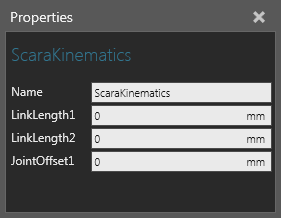

A Scara Kinematics behavior calculates the forward and inverse kinematics of a Robot Controller for a SCARA type robot in which the wrist is defined in one axis (generally the Z-axis) and has two possible configurations (Left and Right).
Note: This is deprecated version, use Scara Kinematics for new models.

| Name | Description |
| Name | Defines the name of the kinematics. |
| LinkLength1 | Defines the length of the robot's arm from its shoulder to the elbow. |
| LinkLength2 | Defines the length from the elbow to the wrist center. |
| JointOffset1 | Defines the offset from the robot's base to the center of axis 1. |